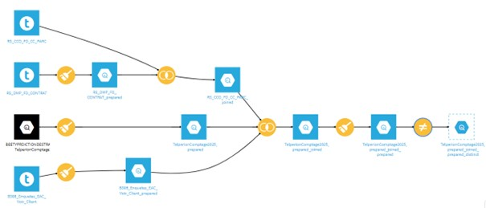
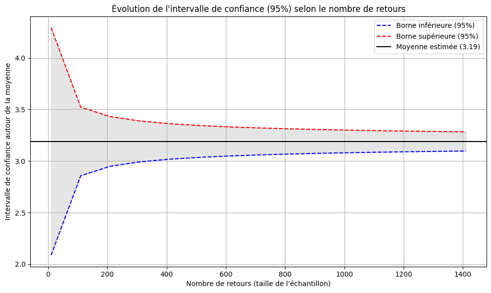
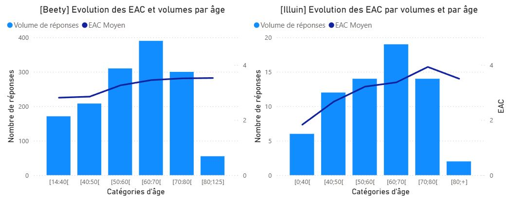

Chatbot
Contexte
Au sein de la Bot Factory, l’équipe Beety est responsable d’un robot conversationnel vocal et de messagerie instantanée. Généralement, l’équipe définit des parcours pour traiter les demandes des clients. Lors de mon stage dans cette équipe, un test a été mené afin de comparer les parcours guidés avec ceux proposés par un bot basé sur l’IA générative. L’équipe devait alors rassembler des données pour optimiser les performances du nouvel outil.
Objectif
Mon travail a porté sur l’analyse des enquêtes à chaud (EAC) envoyées aux clients après contact avec le bot. Les EAC recueillent une note sur 5 et un commentaire, offrant un retour qualitatif et quantitatif. Ma mission visait à étudier les profils des répondants pour identifier des pistes d’amélioration de l’EAC.
Données utilisées
Les données issues de Teradata et Google Cloud Service sont intégrées dans une table unique via Dataiku. Après nettoyage et formatage des tables initiales, une jointure permet d’agréger les informations pertinentes. Les lignes et doublons inutiles sont supprimés, réduisant ainsi le volume de plusieurs dizaines de millions à 13 000 lignes de données qualifiées.
Méthodologie
Pour analyser les données, j'ai suivi le processus suivant:
- Nettoyage et préparation des données sur Dataiku
- Recherche de schémas et analyse exploratoire dans Microsoft Excel
- Création d'une vue sous Microsoft PowerBI
- Analyse statistique avec Python dans Google Colab
- Réalisation d'une présentation avec Microsoft Power Point
Résultats clés
Comparaison des performances
L’analyse statistique sur Python indique qu’il faudrait plus de 1 150 réponses pour obtenir une marge d’erreur de 0,1 à un niveau de confiance de 95%. Avec 67 retours collectés en trois semaines, la marge d’erreur sur les EAC atteint 0,43. Pour un EAC moyen de 3,14 observé chez Illuin, la valeur finale se situerait entre 2,76 et 3,62. Ces résultats ne permettent pas d’identifier clairement le parcours ayant les meilleures performances sur cet indicateur.
Dans le tableau ci-dessous, on peut voir les caractéristiques générales des répondants sur les EAC des deux produits.
| Beety (6 mois) | Illuin (3 semaines) | |
|---|---|---|
| Répondants | 1 134 | 67 |
| Âge moyen | 58,21 | 58,49 |
| Répartition H/F | 49,3 % / 50,7 % | 46 % / 54 % |
| EAC moyen | 3,26 | 3,19 |
Une tendance commune
Il est difficile de déterminer quel outil est le plus optimal, mais une tendance commune apparaît : la participation des jeunes aux enquêtes de satisfaction reste faible, comme en témoignent les moyennes d’âge autour de 58 ans. Les résultats montrent que, sur Beety comme sur Illuin, les réponses des personnes âgées sont associées à une EAC plus élevée. J’ai réalisé un comparatif entre les répondants de moins de 50 ans et ceux de plus de 50 ans qui indique que les personnes plus âgées attribuent en moyenne 0,59 point supplémentaire sur Beety et 1,1 point de plus sur Illuin.
Analyse qualitative
L’analyse exploratoire a indiqué que 50,5 % des répondants ont eu un échange inférieur à 3 secondes. En regardant les commentaires, deux profils principaux se distinguent : certains répondants mettent fin rapidement à la conversation, expriment une insatisfaction liée à l’échange automatisé et attribuent une note faible en raison de l’absence d’un conseiller ; d’autres rencontrent des difficultés à comprendre le but de l’enquête reçue et évaluent un conseiller physique avec lequel ils ont échangé ultérieurement de façon généralement positive.
La première population a tendance à contacter le service en dehors des heures ouvrées. Il pourrait donc être pertinent de l’informer sur les fonctions du robot ainsi que sur les horaires d’ouverture du service client. La seconde population influence favorablement l’EAC moyen ; son comportement indique qu'une reformulation des questions pourrait être nécessaire afin de limiter les risques de confusion et de renforcer la pertinence de notre indicateur.
Apprentissages
Cette mission m’a permis de travailler sur un cas concret avec des données réelles et de comprendre l’importance d’être multitâche face aux délais liés à la gestion de grandes bases de données réparties sur différents environnements. J’ai constaté que ce métier exige adaptabilité, organisation et anticipation pour fournir des données actualisées malgré les contraintes. Enfin, j’ai apprécié de mener un projet de bout en bout, d’affronter divers défis à chaque étape et de jongler entre plusieurs outils pour construire des solutions adaptées.Pour en savoir plus
Vous trouverez ci-dessous le lien vers le projet. Dans ce dossier, vous trouverez à la fois les livrables réalisés pendant le stage, ainsi que des éléments complémentaires sur les outils utilisés (script Python, requête SQL, etc).
Projet ChatbotAccueil